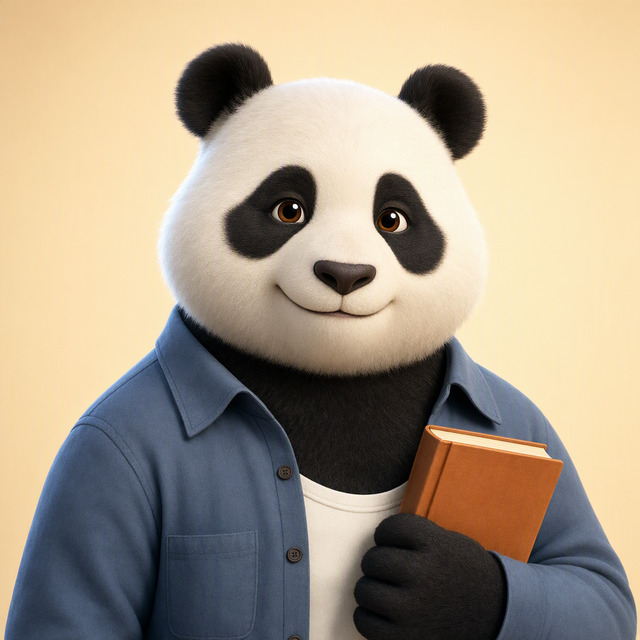

Haitang Street · Product prototype
World-first Chinese practice with visible agent orchestration
EN
中文
Agent trace
Reset
Try episode 01
9:41
EN
World
Teacher
My Journey
Need a little help?
I’ll give you just enough, then step back.
Repeat it
Slow it down
Say it simpler
Give a key word
Show pinyin
Show me an example
1-day review
A Lan has a question for you
你就是新搬来的邻居吧？你叫什么名字？
New voice, same ability. Say your name in Chinese.
I need a hint
Hold to speak
Create a private world
Start with one wish. The system turns it into a small, private three-episode story.
I want to live in a city with a small restaurant and a nosy neighbor.
Generate 3 starter cards